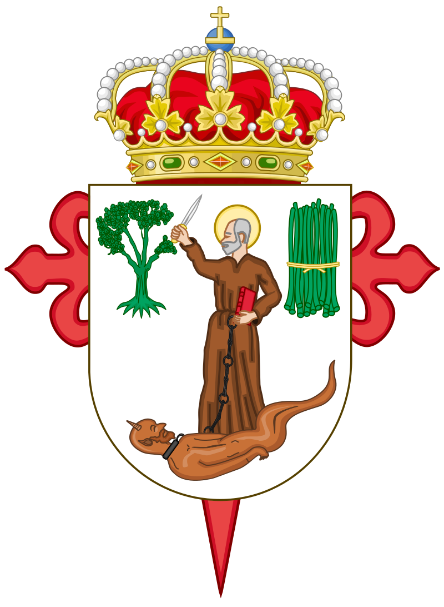

Rutas del Autobús Urbano
Explora las principales rutas y horarios de transporte público en Jerez de los Caballeros
Rutas, Horarios y Paradas Principales
Ruta 1
06:00 - 22:00
Calle Mayor, Plaza de España, Parque de los Llanos
Ruta 2
07:00 - 21:00
Estación de Autobuses, Calle de la Constitución, Plaza de la Iglesia
Ruta 3
08:00 - 20:00
Avenida de la Paz, Plaza del Sol, Calle del Mar
